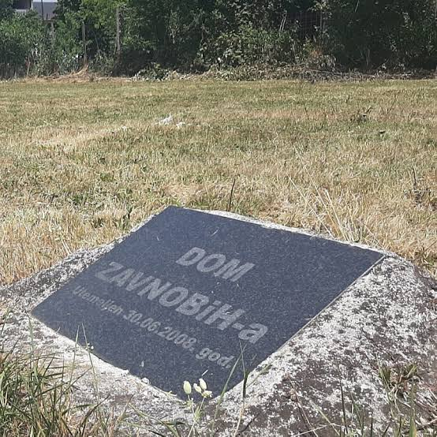

Places
Around
Sanski Most
History
How the town got its name
The name comes from the river Sana, from the Latin sana (“healthy”), as in Aqua Sana. In 1717, in the Ottoman period, the fortress town is mentioned as Džisr-i Sana (džisr = bridge).
Through the centuries
- 6th–3rd c. BC
An Iron Age settlement with a necropolis of 176 graves.
- 1374
Kamengrad is first mentioned; the area belongs to the Sana county (župa).

- 1498–99
The Ottomans take the area.
- 16th c.
The Hamzibeg Mosque is built (before 1557).
- 1878
Austro-Hungarian occupation; Sanski Most becomes a district seat.
- 1944
The second session of ZAVNOBiH is held here.

- 1992
After the Army of Republika Srpska takes control of the municipality, non-Serb civilians are killed and held in camps; the killed residents are later found in about 30 mass graves. On 31 May, civilians from the village of Begići are killed on the Vrhpolje bridge; in June the Hamzibeg Mosque is demolished.
- 1995
The Bosnian Army enters the town in Operation Sana 95, on 9–10 October. Sanski Most marks 10 October as Liberation Day and Municipality Day.
- 2000
The Hamzibeg Mosque reopens after reconstruction.

Sanski Most
In numbers
-

56 m
The drop of the Blihe waterfall.
-
9
Rivers meet in and around the town.
-
142 km
The length of the Sana river, which flows into the Una at Novi Grad.
-
1374
The year Kamengrad fortress is first mentioned.
-
4
Minarets on the Hamzibeg Mosque, reportedly the only mosque in Bosnia and Herzegovina with four.
-
176
Graves in an Iron Age necropolis from the 6th–3rd century BC.
Nine rivers
The town on
nine rivers
The Sana is about 142 km long and flows into the Una at Novi Grad.
- Sana
- Sanica
- Dabar
- Zdena
- Bliha
- Majdanska rijeka
- Japra
- Sasinka
- Kozica